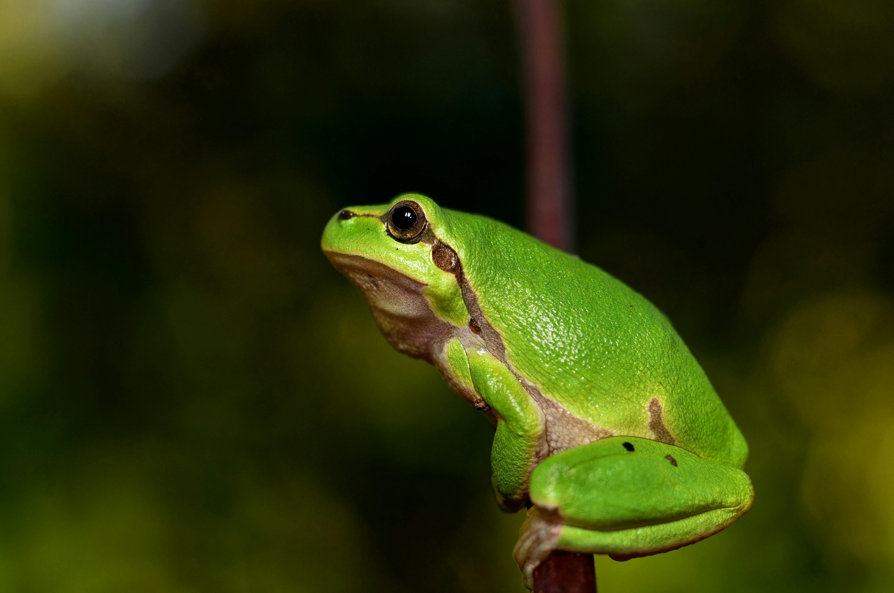
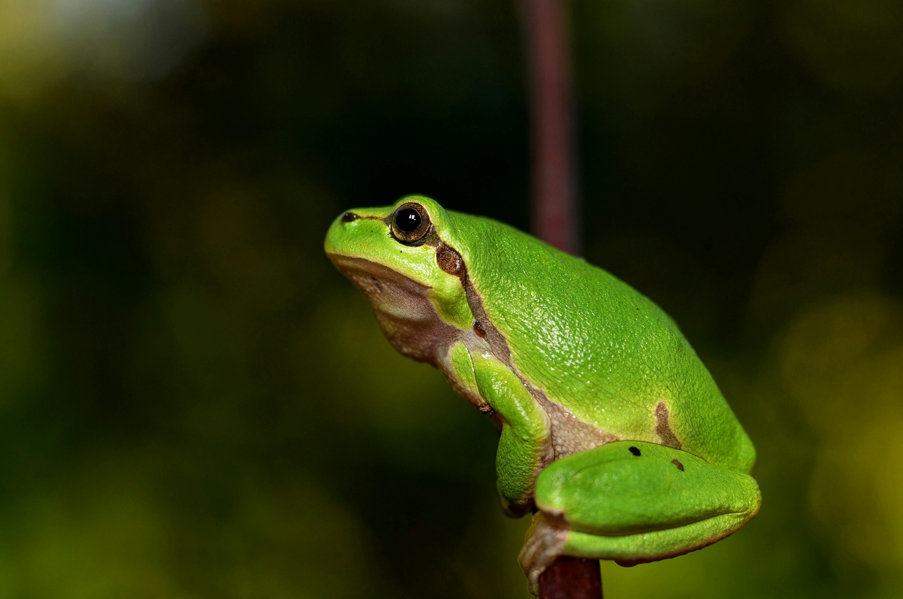

Página1
Página1 Página2
Página2 Página3
Página3 Página4
Página4
 


descrição sobre sapos
Os sapos são anfíbios notáveis que desempenham um papel crucial em diversos ecossistemas, desde florestas até áreas urbanas. Com sua pele úmida e rugosa, eles são mestres da camuflagem e têm um ciclo de vida fascinante que inclui uma metamorfose completa de girino para adulto. Os sapos ajudam a controlar a população de insetos e contribuem para o equilíbrio ambiental. Além de sua importância ecológica, eles têm relevância cultural e simbólica, representando transformação e renovação em diversas tradições. No entanto, enfrentam ameaças como perda de habitat e doenças, o que destaca a necessidade urgente de esforços de conservação para garantir sua sobrevivência e, por consequência, a saúde dos ecossistemas em que vivem. Os sapos são anfíbios notáveis que desempenham um papel crucial em diversos ecossistemas, desde florestas até áreas urbanas. Com sua pele úmida e rugosa, eles são mestres da camuflagem e têm um ciclo de vida fascinante que inclui uma metamorfose completa de girino para adulto. Os sapos ajudam a controlar a população de insetos e contribuem para o equilíbrio ambiental. Além de sua importância ecológica, eles têm relevância cultural e simbólica, representando transformação e renovação em diversas tradições. No entanto, enfrentam ameaças como perda de habitat e doenças, o que destaca a necessidade urgente de esforços de conservação para garantir sua sobrevivência e, por consequência, a saúde dos ecossistemas em que vivem.